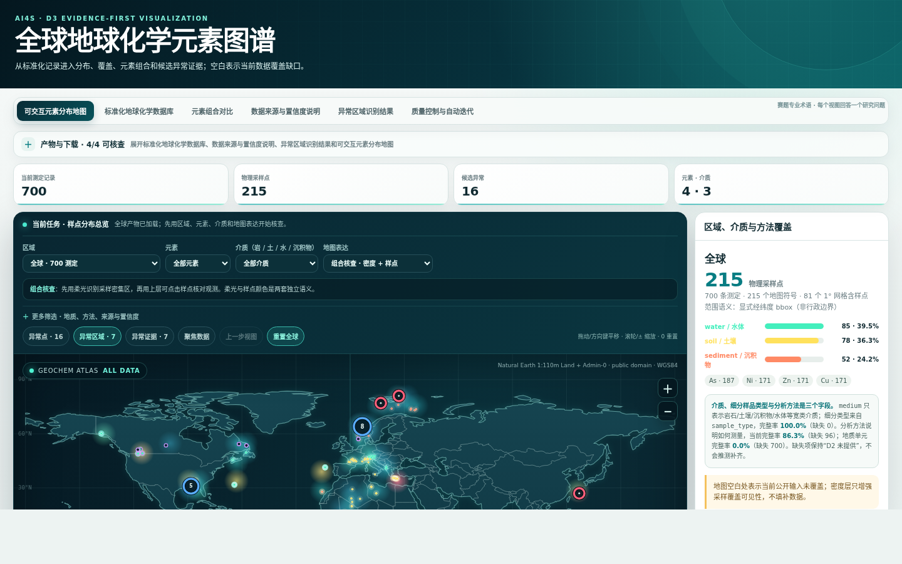

◆
岩石
全岩 / 矿物、主量 / 微量、氧化物表达
Global Geochemical Atlas Skill
把公开测定转成可追溯数据库、候选异常与交互地图。
全岩 / 矿物、主量 / 微量、氧化物表达
层位、粒级、干湿基准、消解方法
河流 / 海洋环境、筛分与部分提取
溶解 / 总量、质量体积单位、采样时间
单位相同，不代表 measurement basis、方法和介质可比。
没有 DOI、版本、许可、文件 hash 与记录定位，地图只是“相信我”。
未采样区域不能被地图底色解释为元素缺失。
$ bash demo/prepare_demo.sh \ /tmp/global-geochemical-atlas-live request execution partial_success records 996 / 996 standardized 996 / 996 valid coordinates 996 / 996 GLiM matched 996 / 996 background groups 12 analyzed record candidates 6 high / low output contract valid errors / warnings 0 / 0

元素 · 介质 · 区域 · 地质 · 方法 · 置信度筛选；点击样点查看原值、标准值、QC、source locator 与 hash。
↗ 打开真实交互地图<LOD、ND、BDL 保留 qualifier 和检出限。
介质、basis、方法和消解语义共同定义背景组。
本次 996 条记录诚实封顶 0.79，不把完整字段写成高置信。